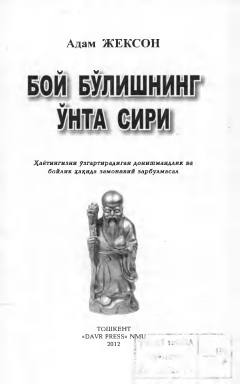

BBHaqiqiy boylik va moliyaviy erkinlikka erishishning o'nta hayotiy sirini ochib beruvchi asar.
Adam Jeksonning ushbu asari haqiqiy boylik va farovonlikka erishishning o'nta muhim sirini ochib beradi. Kitobda hayotiy hikoyalar va donishmandona maslahatlar orqali insonning moliyaviy hamda ma'naviy qarashlarini o'zgartirish yo'llari ko'rsatilgan. Muallif har bir inson o'z hayotini yaxshilash va orzularini amalga oshirish uchun yetarli kuchga ega ekanligini ta'kidlaydi.